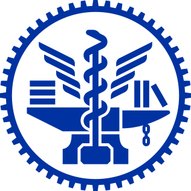

Research Topic Develop programming models and machine learning-based task graph scheduling algorithms to accelerate scientific computing applications using modern C++, CUDA, and Pytorch
Short Biography I earned my Ph.D. from the Department of Electrical and Computer Engineering at the University of Wisconsin-Madison in August 2025, with a focus on parallel and heterogeneous computing and reinforcement learning-based scheduling algorithms using C++ and CUDA. During my Ph.D. career, I published 18 research papers (9 of them are first-authored). I received an honorable mention in the ACM ISPD Wafer-Scale Physics Modeling Contest 2021. I also presented at the learding C++ connference CppNow in 2023.
Awards
- ACM/IEEE DAC Young Student Fellowship, 2024
- ACM/IEEE DAC Young Student Fellowship, 2023
- ACM/IEEE DAC Young Student Fellowship, 2022
- ACM/IEEE DAC Young Student Fellowship, 2021
- ACM/IEEE HPDC Traveling Grant, 2022
- ACM ISPD Wafer-Scale Physics Modeling Contest - Honorable Mention, 2021
Program and Evaluation Committee
- CppCon, 2023, 2024, 2025
- CppNow, 2023
- MLCAD, 2024
Invited Paper Review
- CppCon, 2023, 2024, 2025
- CppNow, 2023
- DAC, 2022, 2023, 2025
- DATE, 2025
- ICCAD, 2024, 2025
- ICCD, 2023
- IPDPS, 2024
- ISVLSI, 2024
- MLCAD, 2024
- MICRO, 2025
- SC, 2023
- "Pipeflow: C++ Task-Parallel Pipeline Scheduling Framework", CppNow, October 2023
PhD, Department of Electrical and Computer Engineering, University of Wisconsin-Madison
MS, Department of Computer Science, École Polytechnique Fédérale de Lausanne

MS, Institute of Communications Engineering, National Yang Ming Chiao Tung UniversityBS, Department of Electrical Engineering, National Chung Cheng University
- Summer Intern, [May 2022 - August 2022], Intel
- Summer Intern, [May 2021 - August 2021], Cadence
- AssistanceResearcher, [February 2019 - December 2019], UiT
- Assistance Researcher, [Jaunary 2018 - November 2018], Khalifa University
- Software Developer, [March 2015 - August 2015], CERN
- Research Assistant, [January 2009 - June 2013], National Chiao Tung University
Taskflow, AsyncTask, Pipeflow, syncFlow
- Taskflow helps C++ developers quickly and efficiently write parallel and heterogeneous programs with high performance and simultaneous high productivity
- AsyncTask enables devlopers to explore dynamic task graph parallelism in their applications
- Pipeflow provide an efficient pipeline scheduling framework
- syclFLow allows users to write GPU codes using single source programming model SYCL easily
Reinforcement Learning-based Scheduling
- Resource-efficient RL-based task scheuling assigns tasks across underlying computing units for the purpose of resource efficiency and workload balancing
- RL-generated topological ordering for task graphs with work stealing runtime
- RL-based CUDA Graph scheduing optimization
Conference Papers
- Chedi Morchdi, Cheng-Hsiang Chiu, Wan Luan Lee, Tsung-Wei Huang, and Yi Zhou, "Enhancing Graph Partitioning with Reinforcement Learning-based Initialization," IEEE High Performance Extreme Computing (HPEC), 2025
- Cheng-Hsiang Chiu, Chedi Morchdi, Chih-Chun Chang, Cunxi Yu, Yi Zhou, and Tsung-Wei Huang, "Optimizing CUDA Graph Scheduling with Reinforcement Learning - A Case Study in SSTA Propagation," IEEE/ACM International Symposium on Machine Learning for CAD (MLCAD), 2025
- Cheng-Hsiang Chiu, Wan-Luan Lee, Boyang Zhang, Yi-Hua Chung, Che Channg, and Tsung-Wei Huang, "A Task-parallel Pipeline Programming Model with Token Dependency," Workshop on Asynchronous Many-Task Systems and Applications (WAMTA), 2025
- Wan-Luan Lee, Dian-Lun Lin, Cheng-Hsiang Chiu, Ulf Schlichtmann, and Tsung-Wei Huang, "HyperG: Multilevel GPU-Accelerated k-way Hypergraph Partitioner," IEEE/ACM Asia and South Pacific Design Automation Conference (ASP-DAC), 2025
- Boyang Zhang, Che Chang, Cheng-Hsiang Chiu, Dian-Lun Lin, Yang Sui, Chih-Chun Chang, Yi-Hua Chung, Wan-Luan Lee, Zizheng Guo, Yibo Lin, and Tsung-Wei Huang, "iTAP: An Incremental Task Graph Partitioner for Task-parallel Static Timing Analysis," IEEE/ACM Asia and South Pacific Design Automation Conference (ASP-DAC), 2025
- Che Chang, Boyang Zhang, Cheng-Hsiang Chiu, Dian-Lun Lin, Yi-Hua Chung, Wan-Luan Lee, Zizheng Guo, Yibo Lin, and Tsung-Wei Huang, "PathGen: An Efficient Parallel Critical Path Generation Algorithm," IEEE/ACM Asia and South Pacific Design Automation Conference (ASP-DAC), 2025
- Cheng-Hsiang Chiu, Chedi Morchdi, Yi Zhou, Boyang Zhang, Che Chang, and Tsung-Wei Huang, "Reinforcement Learning-generated Topological Order for Dynamic Task Graph Scheduling", IEEE High-performance and Extreme Computing Conference (HPEC), 2024
- Cheng-Hsiang Chiu and Tsung-Wei Huang, "An Experimental Study of Dynamic Task Graph Parallelishm for Large-Scale Circuit Analysis Workloads", IEEE Computer Society Annual Symposium on VLSI (ISVLSI), 2024
- Che Chang, Cheng-Hsiang Chiu, Boyang Zhang, and Tsung-Wei Huang, "Incremental Critical Path Generation for Dynamic Graphs", IEEE Computer Society Annual Symposium on VLSI (ISVLSI), 2024
- Boyang Zhang, Dian-Lun Lin, Che Chang, Cheng-Hsiang Chiu, Bojue Wang, Wan Luan Lee, Chih-Chun Chang, Donghao Fang, and Tsung-Wei Huang, "G-PASTA: GPU Accelerated Partitioning Algorithm for Static Timing Analysis," ACM/IEEE Design Automation Conference (DAC), 2024
- Tsung-Wei Huang, Boyang Zhang, Dian-Lun Lin, and Cheng-Hsiang Chiu, "Parallel and Heterogeneous Timing Analysis: Partition, Algorithm, and System," ACM International Symposium on Physical Design (ISPD), 2024
- Cheng-Hsiang Chiu, Zhicheng Xiong, Zizheng Guo, Tsung-Wei Huang, and Yibo Lin, "An Efficient Task-parallel Pipeline Programming Framework," ACM International Conference on High-performance Computing in Asia-Pacific Region (HPC Asia), 2024
- Chedi Morchdi, Cheng-Hsiang Chiu, Yi Zhou, and Tsung-Wei Huang, " A Resource-efficient Task Scheduling System using Reinforcement Learning," IEEE/ACM Asia and South Pacific Design Automation Conference (ASP-DAC), 2024
- Cheng-Hsiang Chiu, Dian-Lun Lin, and Tsung-Wei Huang, "Programming Dynamic Task Parallelism for Heterogeneous EDA Algorithms," IEEE/ACM International Conference on Computer-aided Design (ICCAD), 2023
- Cheng-Hsiang Chiu and Tsung-Wei Huang, "Composing Pipeline Parallelism using Control Taskflow Graph," ACM High-Performance Parallel and Distributed Computing (HPDC), 2022
- Cheng-Hsiang Chiu and Tsung-Wei Huang, "Efficient Timing Propagation with Simultaneous Structural and Pipeline Parallelisms," Design Automation Conference (DAC), 2022
- Cheng-Hsiang Chiu, Dian-Lun Lin, and Tsung-Wei Huang, "An Experimental Study of SYCL Task Graph Parallelism for Large-Scale Machine Learning Workloads," International European Conference on Parallel and Distributed Computing (EURO-PAR), 2021
- Der-Cherng Liaw, Jing-Hong Lai, Cheng-Hsiang Chiu, and Jia-Hong Liao, "A Wireless Sensor Network Platform for Indoor Surveillance System," International Conference on System Science and Engineering, 2011
- Der-Cherng Liaw, Yi-Hung Hsieh, Jing-Hong Lai, and Cheng-Hsiang Chiu, "A Network Topology Design for Structural Health Monitoring," Asian Control Conference, 2011
- Der-Cherng Liaw, Chia-Wei Yeh, Cheng-Hsiang Chiu, Chia-Ming Chang, and Hsiao-Jen Hsieh, "A Load Balancing Scheme for Web Server Design," International Conference on System Science and Engineering, 2011
- Der-Cherng Liaw, Cheng-Hsiang Chiu, Chia-Wei Yeh, Chia-Ming Chang, and Hsiao-Jen Hsieh, "A Server Load Balancing Design for Peer-To-Peer Network," International Conference on Mechanical Engineering and Technology, 2011
- Cheng-Hsiang Chiu, Pang-Chan Hung, Jen-Hui Chuang, and Shing-Lu Huang, "Object Tracking under Sensing Lighting Equipments," IEEE Conference on Industrial Electronics and Applications, 2010
- Yi-Yuan Chen, Yuan-Yao Tu, Cheng-Hsiang Chiu, and Yong-Sheng Chen, "An Embedded System for Vehicle Surrounding Monitoring," IEEE Conference on Power Electronics and Intelligent Transportation System, 2009
Journal Papers
- Wan-Luan Lee, Dian-Lun Lin, Shui Jiang, Cheng-Hsiang Chiu, Yibo Lin, Bei Yu, Tsung-Yi Ho, and Tsung-Wei Huang, "G-kway: Multilevel GPU-Accelerated k-way Graph Partitioner using Task Graph Parallelism," ACM Transactions on Design Automation of Electronic Systems (TODAES), 2025
- Yu-Cheng Chiou, Tuza Adeyemi Olukan, Mariam Ali Almahri, Harry Apostoleris, Cheng- Hsiang Chiu, Chia-Yun Lai, Jin-You Lu, Sergio Santos, Ibraheem Almansouri, and Matteo Chiesa, "Direct Measurement of the Magnitude of van der Waals interaction of Single and Multilayer Graphene," ACS LANGUMIR, 2018
Thesis
- Cheng-Hsiang Chiu, "Asynchronous Many-task System with Intelligent Scheduling," Ph.D. Dissertation, University of Wisconsin-Madison, USA, 2025
- Cheng-Hsiang Chiu, "Protection against Data Profiling by Adversarial Cloud Applications," Master Thesis, École Polytechnique Fédérale de Lausanne (EPFL), Switzerland, 2016
- Cheng-Hsiang Chiu, "Process control in Streaming Server," Master Thesis, National Chiao Tung University, Taiwan, 2007